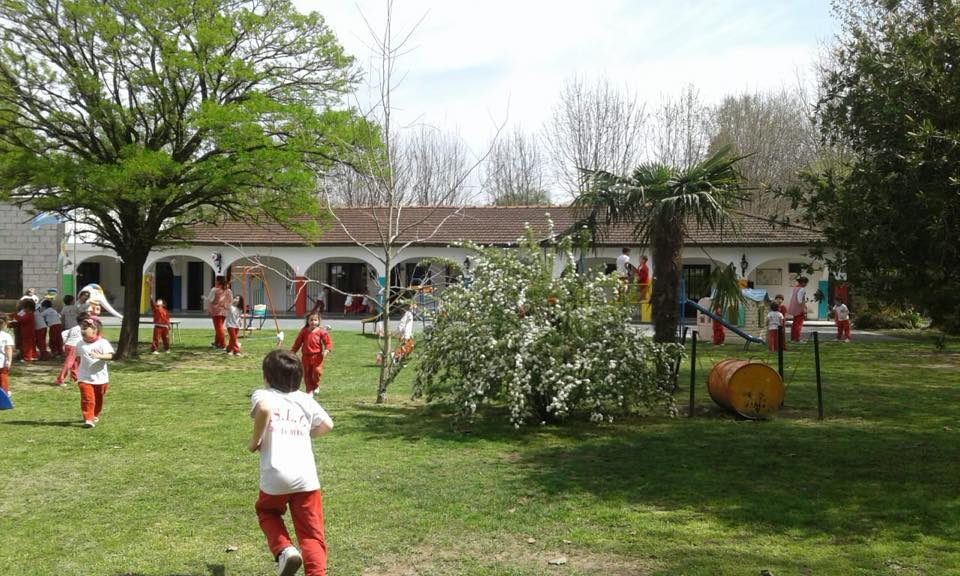

NIVEL INICIAL
En un marco de juego y de trabajo, en las salas de 3,4 y 5 años, se prioriza el desarrollo integral de los alumnos, respetando los tiempos de cada uno, para lograr lo mejor de sus capacidades.
En un marco de juego y de trabajo, en las salas de 3,4 y 5 años, se prioriza el desarrollo integral de los alumnos, respetando los tiempos de cada uno, para lograr lo mejor de sus capacidades.
En el Nivel Primario, los cambios en los alumnos son profundos, es por eso que se incorporan las competencias de una manera gradual de acuerdo con cada etapa.
En el Nivel Secundario los alumnos se manejan con niveles crecientes de autonomia, y progresivamente se afirman caracteristicas y rasgos de personalidad.
El objetivo del jardín es generar vínculos de afecto y confianza que brinden seguridad en sus capacidades y deseos de aprender. Ofrece oportunidad de desarrollar la expresión, la comunicación, la creatividad, el placer de explorar y conocer.
Se fundamenta en la formación de valores éticos, religiosos y en la adquisición de conocimientos con propuestas didácticas donde el juego orienta la enseñanza.
Se fundamenta en la formación de valores éticos, religiosos y en la adquisición de conocimientos con propuestas didácticas donde el juego orienta la enseñanza.
Nuestra propuesta educativa está íntimamente vinculada con el mejoramiento de la calidad de vida, desde nuestra labor, en el marco de una escuela católica.
Proponemos como estilo educativo al que acompañe al niño a aprehender el mundo que lo rodea a través de sus experiencias, construyendo así, representaciones que constituyen los contenidos. Estas representaciones le permitirán explicar ese mundo y comprender para actuar en él.
En el acto de conocer brindamos al alumno, el andamiaje que lo ayude a poner en juego toda su persona. Conocer es origen y razón de los múltiples cambios que vivimos en interacción con el mundo y los otros. El sostén de nuestra acción educativa es el vínculo permanente y dinámico, entre alumnos, objeto de enseñanza y aprendizaje, y maestros.
Los fines que se persiguen en este nivel son una formación académica de calidad, la preparación para insertarse en el mundo del trabajo y en estudios superiores y la formación de ciudadanos participativos y responsables en la comunidad a la que pertenecen.
Nuestro nivel ofrece el Secundario Básico (3 años) Secundario Superior (3 años) con la posibilidad de 3 modalidades: Ciencias Naturales, Ciencias Sociales y Economía y Administración.
Contamos con: Proyecto de pasantías no rentadas para los alumnos del último año del secundario, Orientación vocacional para los alumnos de 3er. año de Secundario Básico y 6to. de Secundario Superior así como también la participación en Olimpíadas de Matemática, Geografía, Historia, Química, Gestión Empresarial; organización de ferias, muestras, fiesta de la educación física, campamentos, jornadas solidarias y todas las actividades que estimulen la creatividad, las relaciones interpersonales, la solidaridad, la tolerancia y responsabilidad como ciudadanos.